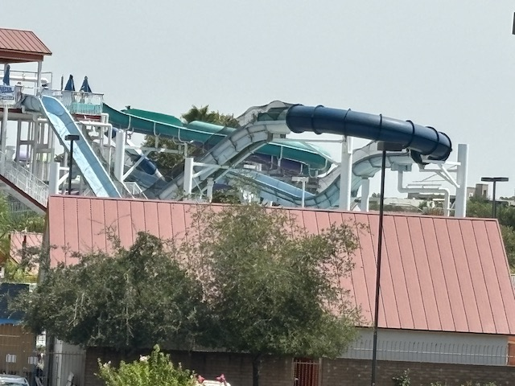

| |
Master Blaster Review

We're here at SunSplash, and we're here to ride one of their more popular water slides, Master Blaster. Yep. This place has a freaking Master Blaster. In fact, It really reminds me of the original Master Blaster @ Schlitterbahn. Yeah. That's far from the best water coaster slide, but it's still a lot of fun, plus it's not the worst one either, and even those are still a lot of fun. So grab your tube, carry it up the stairs, and then head down the first drop, which I will admit is A LOT of fun. We then head up a hill, lose some of our speed, and go around an enclosed turn. Yeah, we're having a lot of fun right now. We then head down another drop, and go through a tiny little hill that doesn't really give us much speed, but it's still fun. We go from that bump and into another tiny little bump, rise up, and head into an enclosed turn. Hey, there's actually some laterals in here. We go down a tiny little hill, rise up, and into another enclosed turn. WEE!!! Laterals!!! It's pretty much just an S turn at this point. I'm definetly enjoying this. We break into daylight, but just briefly, before going through another quick turn in the dark, which spits us back into the light. TAKE THE ENCLOSED TURN!!! I GUESS!!! We spit out, are right underneath the Twisted Twins before we dip down. WEE!!! We rise up, head around another closed turn (I think all the turns on here have to be enclosed for...reasons), and head down the final drop. Not big, but still fun. WEE!!! And now we splash right into the lazy river. Is this the best water coaster? No. Far from it. But in all honesty,
7/10
Location: Golfland Sunsplash (Roseville)
Opened: 2002
Built by: ProSlide
Last Ridden: July 27, 2024
Master Blaster Photos


Home
|